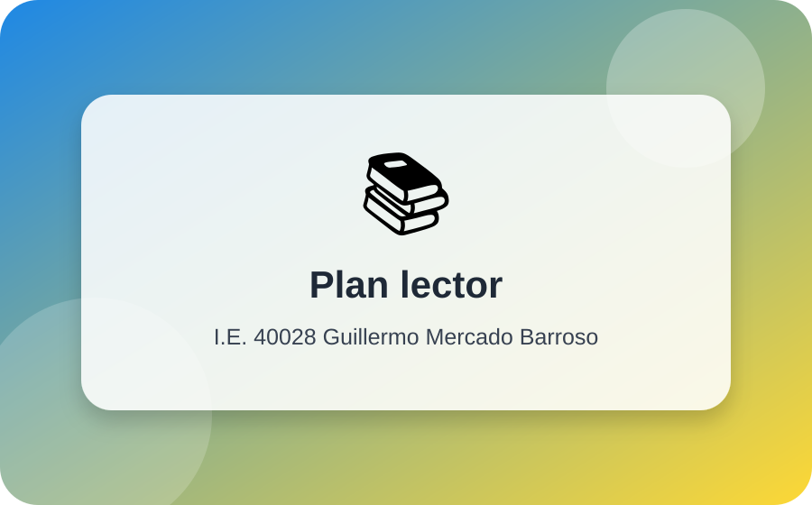
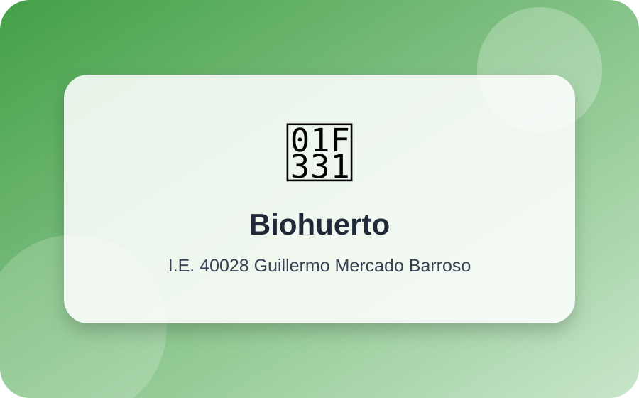
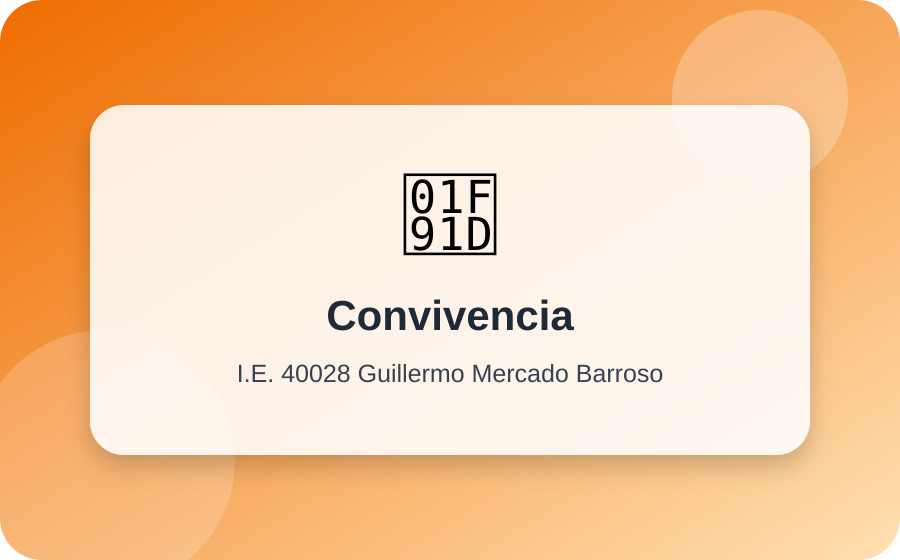
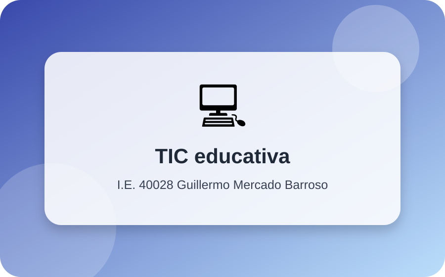
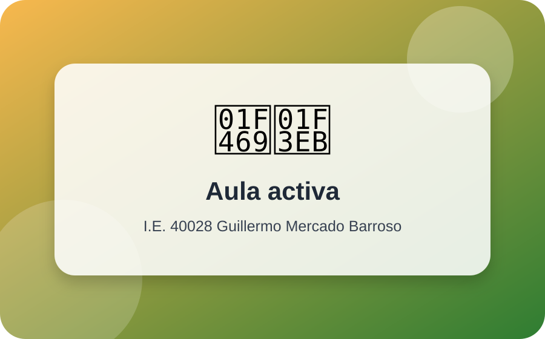
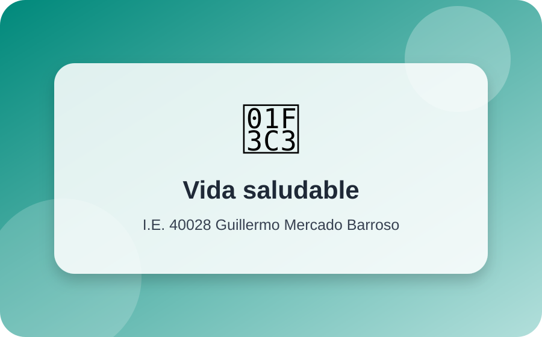

Identidad institucional
Somos Guillermo Mercado Barroso
Brindamos un servicio educativo de calidad para estudiantes de primaria y secundaria, fortaleciendo valores, competencias para la vida y habilidades socioemocionales.
Misión
Formamos integralmente a nuestros estudiantes en un entorno social inclusivo y eco amigable, promoviendo aprendizajes significativos, competencias para la vida, derechos, deberes, valores y cultura de paz.
Visión
Ser una institución educativa líder en Alto Selva Alegre, reconocida por formar ciudadanos íntegros, críticos, responsables y comprometidos con la sociedad, en un marco de respeto, inclusión y equidad.
ResponsabilidadRespetoSolidaridadJusticiaEmpatíaPerseveranciaEquidadPuntualidadCuidado del entorno
Mensaje institucional
Una escuela que aprende, acompaña y transforma
El logro de aprendizajes y la formación integral de niñas, niños y adolescentes se fortalece cuando toda la comunidad educativa comparte una misma visión y trabaja colaborativamente.
“Reafirmamos nuestro compromiso con una educación de calidad, pertinente y orientada al desarrollo pleno de nuestros estudiantes”.
Dirección institucionalNuestro equipo directivo
Liderazgo pedagógico y gestión participativa
PA
Lic. Percy Aquino Huillca Zavala
Director General
MS
Lic. Marivel Sisa Condori
Subdirectora del nivel Primario
LL
Lic. Lourdes Teresa Lima Chaiña
Subdirectora del nivel Secundario
Propuesta educativa
Aprendizajes significativos para la vida
Nuestra práctica pedagógica se centra en el estudiante, el enfoque por competencias, la evaluación formativa, el pensamiento crítico, la convivencia democrática y el cuidado del ambiente.
Nivel Primaria
Fortalecemos la comunicación, matemática, ciencia y tecnología, personal social, arte, cultura, educación física, tutoría y orientación educativa.
- Aprendizaje activo y situado.
- Refuerzo escolar según necesidades.
- Convivencia y bienestar emocional.
Nivel Secundaria
Promovemos el pensamiento crítico, la ciudadanía activa, el emprendimiento, la investigación, las TIC y la preparación para el mundo académico, laboral y social.
- Áreas curriculares articuladas al CNEB.
- Educación para el Trabajo y competencias TIC.
- Tutoría, convivencia y proyecto de vida.
Competencias transversales
Desarrollamos la gestión autónoma del aprendizaje y el desenvolvimiento responsable en entornos virtuales, con énfasis en ciudadanía digital.
- Uso responsable de herramientas digitales.
- Organización de metas y evidencias.
- Aprendizaje colaborativo y creativo.
Servicios digitales
Plataformas, recursos y atención
Mesa de partes virtual
Canal para orientar trámites, solicitudes y comunicaciones institucionales.
Enviar correoSIAGIE
Gestión de matrícula, asistencia, calificativos e información académica.
Ir a SIAGIEAula virtual
Espacio para compartir materiales, evidencias, tareas y retroalimentación.
Solicitar accesoBiblioteca escolar
Promoción de lectura, consulta y apoyo al Plan Lector institucional.
Ver Plan LectorLaboratorio
Indagación, ciencia escolar y proyectos tecnológicos para resolver problemas del entorno.
Ver metodologíasPerúEduca
Recursos formativos para docentes y estudiantes.
Visitar PerúEducaProyectos institucionales
Innovación, ambiente y convivencia
Actividades que fortalecen la identidad barrosina y responden a las necesidades del entorno.

Lectura
¡STOP! Barrosinos leyendo
Promueve el hábito lector en aula, hogar y espacios escolares.

Ambiente
Biohuerto y reciclaje
Gestión de residuos sólidos, cuidado de áreas verdes y educación eco amigable.

Convivencia
Tutoría y bienestar
Acompañamiento socioafectivo, cultura de paz y prevención de riesgos.

TIC
Ciudadanía digital
Uso responsable de entornos virtuales y recursos digitales para aprender.

Gestión
Escuela saludable
Limpieza, orden, seguridad y conservación del patrimonio escolar.

Vida saludable
Actividad física y deporte
Prácticas que fortalecen la salud, la disciplina y el trabajo en equipo.
Metodologías activas
Aprender haciendo y reflexionando
Aprendizaje Basado en Proyectos
Los estudiantes investigan problemas reales, diseñan soluciones y comunican productos útiles para su comunidad.
Trabajo cooperativo
Se promueve la ayuda mutua, la complementariedad de roles y la autorregulación dentro de los equipos.
Evaluación formativa
La retroalimentación permite reconocer avances, dificultades y acciones de mejora durante todo el proceso de aprendizaje.
Pensamiento crítico y complejo
Se analizan situaciones del contexto para tomar decisiones responsables y argumentadas.
Recursos multimedia
Vida escolar en imágenes y video
Video institucional de presentación. Puedes reemplazarlo por un video real de la I.E.
“Ser barrosino es aprender con respeto, esfuerzo y compromiso”.
EstudianteComunicados
Noticias y avisos
Inicio del año escolar
Bienvenida a estudiantes, familias y docentes para un nuevo año de aprendizajes.
Plan Lector institucional
Fortalecemos el hábito lector con espacios de lectura planificados.
Campaña ambiental
Reciclaje, biohuerto y cuidado del entorno para una escuela eco amigable.
Contáctenos
Estamos para atenderte
- 📍 Calle Abancay con Huaraz s/n, P.J. Apurímac, Alto Selva Alegre, Arequipa
- 📧 mesadepartes@gmb.edu.pe
- 🕘 Atención: lunes a viernes